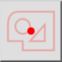
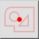
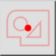
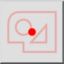

Centro da seleção
Barra de Ferramenta / Ícone:
 

Menu: Snap > Centro da seleção
Atalho: S, K
Comandos: snapselectioncenter | sk
Esta é uma tradução automática.
Barra de Ferramenta / Ícone:
 

Menu: Snap > Centro da seleção
Atalho: S, K
Comandos: snapselectioncenter | sk
Passa para o centro da seleção atual. Este é o ponto central entre a aresta mais à esquerda e a aresta mais à direita na direcção X e a aresta mais baixa e mais acima na direcção Y da selecção.